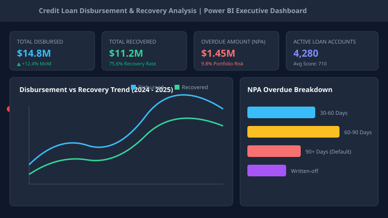
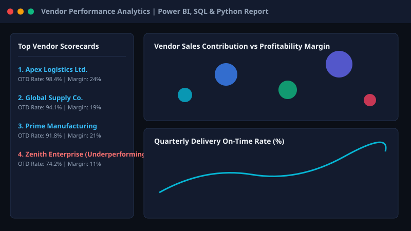
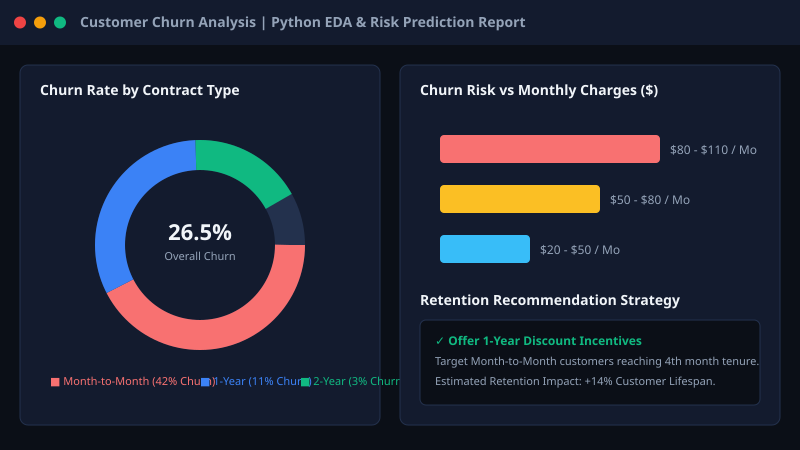
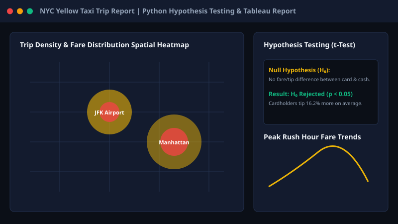
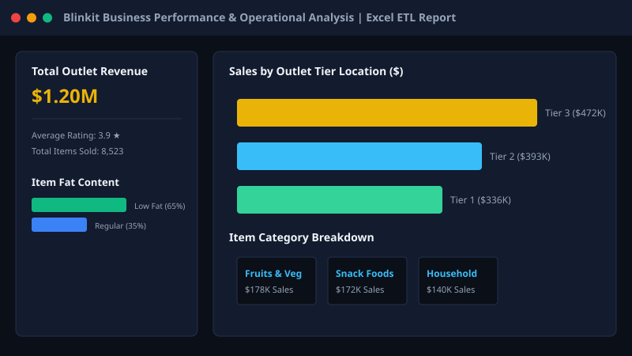
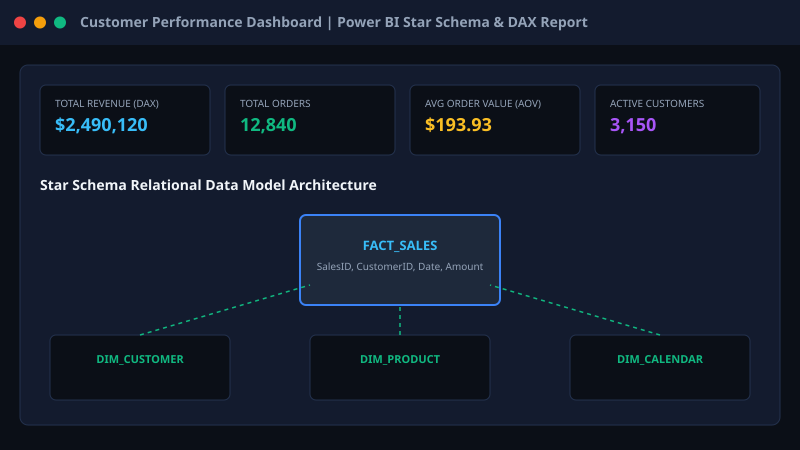

Hi, I'm Rutvik Bambhaniya
Data Analyst | Power BI & SQL Specialist
Turning complex business data into actionable insights using SQL, Excel, Power BI, Python & Tableau. BCA Graduate with a 6-month analytics internship and specialized ExcelR training in business intelligence & data modeling.
About Me
Early-Career Data Analyst
I am a motivated Data Analyst with a degree in Bachelor of Computer Applications (BCA) and professional training from ExcelR. My background includes a 6-month Data Analyst internship, where I solved business-centric data challenges using structured query languages, statistical tools, and interactive BI dashboards.
I specialize in taking unstructured raw datasets, cleaning and transforming them through ETL pipelines, establishing robust relational data models (Star Schema), and developing intuitive dashboards that empower non-technical stakeholders to make evidence-based decisions.
Education & Certifications
-
Graduated
Bachelor of Computer Applications (BCA)
University Level Degree
-
Professional Program
Data Analyst Training Program
ExcelR
Hands-on training in SQL query optimization, Advanced Excel formulas, Power BI DAX calculations, Python EDA, and data modeling.
Technical Skills
Verified tools and analytical competencies built through real-world projects and internship experience.
Database & SQL
Querying, data aggregation, multi-table JOINs, subqueries, and window functions.
Business Intelligence
Data modeling, interactive dashboard design, and enterprise reporting.
Data Analysis & Excel
Advanced spreadsheet operations, pivot tables, data hygiene, and summary reporting.
Python & Analytics
Exploratory Data Analysis (EDA), statistical modeling, and data manipulation.
Work Experience
Data Analyst Intern
Data Analytics TeamParticipated in end-to-end data analytics activities including data extraction, cleaning, Exploratory Data Analysis (EDA), interactive dashboard development, and business stakeholder reporting.
Key Responsibilities & Contributions:
- Extracted and consolidated business data from multiple flat files and relational databases using SQL queries.
- Cleaned, preprocessed, and handled missing data fields using Excel and Python (Pandas/NumPy) to ensure data accuracy.
- Designed and published interactive Power BI and Tableau dashboards to track key performance indicators (KPIs) and operational metrics.
- Built star-schema data models and engineered reusable DAX calculations to automate recurring monthly MIS reports.
- Presented data-backed findings to operational managers to support workflow improvements and inventory tracking.
My Data Analytics Workflow
How I translate raw datasets into measurable business value.
Understand Business Problem
Identify business objectives, key performance indicators (KPIs), and critical stakeholders' requirements.
Collect & Prepare Data
Query relational databases via SQL or ingest CSV/Excel sources using Power Query & Python ETL scripts.
Clean & Transform Data
Handle null values, standardize data types, resolve anomalies, and construct relational data models (Star Schema).
Analyze & Build Dashboards
Perform Exploratory Data Analysis (EDA) and build intuitive dashboards with DAX metrics and filtering controls.
Deliver Business Insights
Extract meaningful trends, document actionable recommendations, and communicate results clearly to decision makers.
Analytics Projects
Real-world data analytics projects built using SQL, Power BI, Python, Excel, and Tableau. Click any project to view complete details & business insights.

Credit Loan Disbursement & Recovery Analysis
End-to-end loan portfolio tracking system to analyze disbursement trends, monitor overdue amounts, evaluate customer repayment behavior, and track default rates using SQL queries and interactive Power BI dashboards.

Vendor Performance Analysis
Evaluates vendor efficiency, sales contribution, profitability margins, and inventory turnover across suppliers to optimize vendor selection and operational procurement workflows.

Customer Churn Analysis (Python EDA)
Exploratory Data Analysis (EDA) on customer attrition data to identify key churn indicators, demographic correlation, contract type impact, and actionable customer retention strategies.

NYC Yellow Taxi Trip Report & Hypothesis Testing
Analysis of NYC taxi trips, investigating passenger behavior, trip duration, fare metrics, and statistical hypothesis testing (t-tests) with interactive Tableau visualizations.

Blinkit Business Performance & Operational Analysis
Evaluated sales trends, item category performance, store location efficiency, and customer satisfaction metrics to streamline quick-commerce operational workflows.

Customer Performance Dashboard (Power BI Star Schema)
Power BI analytics dashboard using a relational star schema data model and custom DAX measures to analyze customer purchase frequency, sales distribution, and key revenue metrics.
Dashboard Showcase
High-resolution visualization preview of Power BI, Tableau, and Excel analytical reports.
Credit & Loan Performance Report
Power BI & SQLVendor Performance Analysis
Power BI & PythonCustomer Retention & Churn EDA
Python & ExcelNYC Taxi Passenger & Fare Report
Tableau & PythonContact Me
Interested in hiring a Data Analyst or discussing analytics opportunities? Let's connect!
Contact Information
Feel free to reach out directly via email, LinkedIn, or GitHub.
Open for Job Opportunities
I am actively applying for the following full-time or contract roles:
- Data Analyst
- MIS Analyst / MIS Executive
- Data Operations Analyst
- Business Analyst (Entry Level)
- Operations Analyst